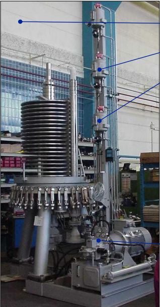

Product Overview
产品简介
用于从浆料中分离催化剂或固体颗粒，并提高浓缩液中的固含量；兼具过滤与浓缩双重功能，适合连续稳定回收清液并提升固体浓度的工艺段。

用于从浆料中分离催化剂或固体颗粒，并提高浓缩液中的固含量；兼具过滤与浓缩双重功能，适合连续稳定回收清液并提升固体浓度的工艺段。
通常布置在浆料反应或催化剂回收相关工段，用于清液回收、催化剂浓缩和后续输送衔接。
适合浆料体系的固液分离与浓缩阶段，尤其适用于需要连续稳定回收清液并提升催化剂浓度的工艺段。
通过表面过滤与错流过滤的组合思路，在保持连续运行的同时实现固液分离与浓缩。滤盘旋转配合刮刀控制滤饼厚度，滤饼层在一定程度上可保护过滤介质并改善细颗粒截留效果。
结合表面过滤与错流过滤
滤盘旋转配合刮刀控制滤饼厚度
滤饼层可改善细颗粒截留
不易堵塞，适合较高通量运行
以下为当前产品页可公开展示的参考信息，具体参数、材质和配置请结合项目工况进一步确认。
| 重点关注 | 处理量、固含量提升目标、介质颗粒特性、材质、温度、压力 |
|---|---|
| 运行方式 | 连续过滤与浓缩 |
| 适用介质 | 含催化剂颗粒浆料或其他需浓缩固液混合物 |
| 备注 | 具体能力与配置需结合项目工况确认 |